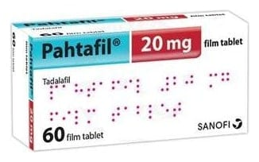

Pahtafil 20 mg Film Kaplı Tablet, 60 Adet

Ne için kullanılır
KT · Bölüm 1PAHTAFİL 20 mg, Sarı renkli, damla şekilli film tablettir. 60 tabletlik blister ambalajda sunulmaktadır.
PAHTAFİL’in etkin maddesi tadalafil, fosfodiesteraz 5 (PDE5) inhibitörleri olarak bilinen bir ilaç grubunun üyesidir. Akciğerlerinizin çevresindeki kan damarlarının gevşemesini sağlayarak akciğerlerinize giden kan akımnı güçlendirir.
PAHTAFİL, fiziksel egzersiz kapasitenizi artırmak amacıyla, kısaca PAH olarak adlandırılan Pulmoner Arteriyel Hipertansiyon (Akciğerlere giden damarda kan basıncının yüksek olması) tedavisinde kullanılan bir ilaçtır.